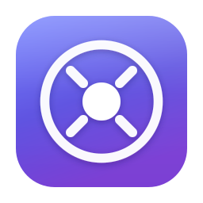

Machines0

Your notes sync between machines through a private git repository. Choose how to set this one up.
Prefer a terminal? jotbay init does the same thing.
Your notes live in . Anything you put
there reaches your other machines on the next sync.
You can do this later with jotbay shortcut
Applies to this machine only, settings never sync.
Show the raw underlying detail, including full git output on failures.